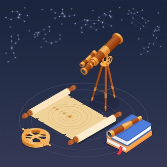

La historia de la astronomia

La astronomía es una de las ciencias más antiguas del ser humano, ya que desde la antigüedad las
estrellas y los cuerpos de la bóveda celeste han capturado su atención y su curiosidad. Grandes
estudiosos de este campo fueron los filósofos de la antigüedad como Aristóteles, Tales de Mileto,
Anaxágoras, Aristarco de Samos o Hiparco de Nicea, los científicos posrenacentistas como Nicolás
Copérnico, Tycho Brahe, Johannes Kepler, Galileo Galilei y Edmund Halley, o especialistas contemporáneos
como Stephen Hawkins.
Los antiguos estudiaron exhaustivamente el firmamento, la Luna y el Sol, tanto así que los antiguos
griegos ya sabían de la redondez de la Tierra, pero suponían que los astros giraban alrededor del planeta,
y no al revés. Esto se mantendría hasta finales del medioevo europeo, cuando la Revolución Científica
cuestionó muchos de los fundamentos universales que la religión mantenía como sagrados.
Posteriormente, ya en el siglo XX, las nuevas tecnologías de avanzada disponibles para la humanidad
permitieron una mayor comprensión de la luz y con por ende de las tecnologías de observación telescópica,
trayendo consigo nuevas comprensiones del universo y de los elementos que lo componen.
La astronomia comprende las siguientes ramas:
Astrofísica: Fruto de la aplicación de la física a la astronomía, para explicar las propiedades y
fenómenos celestes, formulando leyes, midiendo magnitudes y expresando los resultados matemáticamente
a través de fórmulas
Astrogeología: Conocida como exogeología o geología planetaria, se trata de la aplicación de los
conocimientos obtenidos durante excavaciones y observaciones telúricas en el planeta Tierra, a otros
cuerpos celestes cuya composición puede conocerse de lejos o, incluso, como es el caso de la luna y
marte, a través del envío de sondas recolectoras de muestras rocosas.
Astronáutica: De tanto observar los astros, el hombre empezó a soñar con visitarlos. La astronáutica
es justamente la rama de la ciencia que busca hacer ese sueño posible.
Planetología:También llamada ciencias planetarias, se centra en el saber acumulado de los planetas
conocidos y por conocer, es decir, de los que componen nuestro sistema solar y de los que distan de él.
Esto abarca desde objetos del tamaño de un meteoro a gigantes gaseosos de enorme envergadura.
Diferencias entre astronomia y astrologia
La diferencia entre estas dos disciplinas es fundamental. Cuando hablamos de astronomía nos referimos
a una ciencia que emplea, lógicamente, el método científico para llevar a cabo sus mediciones y
comprobaciones, que puede ser refutada y se basa en experimentos analizables y en teorías con sustento
matemático.
La astrología, en cambio, es una “ciencia ocultista” o pseudociencia, es decir, una doctrina interpretativa
de la realidad que no posee basamento científico alguno, ni responde a otros campos del saber fáctico
comprobable, sino que se sostiene en base a sus propias y exclusivas reglas de juego. Si la astronomía es
el entendimiento científico del cosmos, la astrología es la explicación de fenómenos terrestres mediante
figuras trazadas arbitrariamente en las estrellas.
La astronomía es una de las ciencias más antiguas del ser humano, ya que desde la antigüedad las estrellas y los cuerpos de la bóveda celeste han capturado su atención y su curiosidad. Grandes estudiosos de este campo fueron los filósofos de la antigüedad como Aristóteles, Tales de Mileto, Anaxágoras, Aristarco de Samos o Hiparco de Nicea, los científicos posrenacentistas como Nicolás Copérnico, Tycho Brahe, Johannes Kepler, Galileo Galilei y Edmund Halley, o especialistas contemporáneos como Stephen Hawkins.
Los antiguos estudiaron exhaustivamente el firmamento, la Luna y el Sol, tanto así que los antiguos griegos ya sabían de la redondez de la Tierra, pero suponían que los astros giraban alrededor del planeta, y no al revés. Esto se mantendría hasta finales del medioevo europeo, cuando la Revolución Científica cuestionó muchos de los fundamentos universales que la religión mantenía como sagrados.
Posteriormente, ya en el siglo XX, las nuevas tecnologías de avanzada disponibles para la humanidad permitieron una mayor comprensión de la luz y con por ende de las tecnologías de observación telescópica, trayendo consigo nuevas comprensiones del universo y de los elementos que lo componen.
La astronomia comprende las siguientes ramas:
Astrofísica: Fruto de la aplicación de la física a la astronomía, para explicar las propiedades y
fenómenos celestes, formulando leyes, midiendo magnitudes y expresando los resultados matemáticamente
a través de fórmulas
Astrogeología: Conocida como exogeología o geología planetaria, se trata de la aplicación de los
conocimientos obtenidos durante excavaciones y observaciones telúricas en el planeta Tierra, a otros
cuerpos celestes cuya composición puede conocerse de lejos o, incluso, como es el caso de la luna y
marte, a través del envío de sondas recolectoras de muestras rocosas.
Astronáutica: De tanto observar los astros, el hombre empezó a soñar con visitarlos. La astronáutica
es justamente la rama de la ciencia que busca hacer ese sueño posible.
Planetología:También llamada ciencias planetarias, se centra en el saber acumulado de los planetas
conocidos y por conocer, es decir, de los que componen nuestro sistema solar y de los que distan de él.
Esto abarca desde objetos del tamaño de un meteoro a gigantes gaseosos de enorme envergadura.
Diferencias entre astronomia y astrologia
La diferencia entre estas dos disciplinas es fundamental. Cuando hablamos de astronomía nos referimos
a una ciencia que emplea, lógicamente, el método científico para llevar a cabo sus mediciones y
comprobaciones, que puede ser refutada y se basa en experimentos analizables y en teorías con sustento
matemático.
La astrología, en cambio, es una “ciencia ocultista” o pseudociencia, es decir, una doctrina interpretativa
de la realidad que no posee basamento científico alguno, ni responde a otros campos del saber fáctico
comprobable, sino que se sostiene en base a sus propias y exclusivas reglas de juego. Si la astronomía es
el entendimiento científico del cosmos, la astrología es la explicación de fenómenos terrestres mediante
figuras trazadas arbitrariamente en las estrellas.
Astrofísica: Fruto de la aplicación de la física a la astronomía, para explicar las propiedades y fenómenos celestes, formulando leyes, midiendo magnitudes y expresando los resultados matemáticamente a través de fórmulas
Astrogeología: Conocida como exogeología o geología planetaria, se trata de la aplicación de los conocimientos obtenidos durante excavaciones y observaciones telúricas en el planeta Tierra, a otros cuerpos celestes cuya composición puede conocerse de lejos o, incluso, como es el caso de la luna y marte, a través del envío de sondas recolectoras de muestras rocosas.
Astronáutica: De tanto observar los astros, el hombre empezó a soñar con visitarlos. La astronáutica es justamente la rama de la ciencia que busca hacer ese sueño posible.
Planetología:También llamada ciencias planetarias, se centra en el saber acumulado de los planetas conocidos y por conocer, es decir, de los que componen nuestro sistema solar y de los que distan de él. Esto abarca desde objetos del tamaño de un meteoro a gigantes gaseosos de enorme envergadura.
Diferencias entre astronomia y astrologia
La diferencia entre estas dos disciplinas es fundamental. Cuando hablamos de astronomía nos referimos
a una ciencia que emplea, lógicamente, el método científico para llevar a cabo sus mediciones y
comprobaciones, que puede ser refutada y se basa en experimentos analizables y en teorías con sustento
matemático.
La astrología, en cambio, es una “ciencia ocultista” o pseudociencia, es decir, una doctrina interpretativa
de la realidad que no posee basamento científico alguno, ni responde a otros campos del saber fáctico
comprobable, sino que se sostiene en base a sus propias y exclusivas reglas de juego. Si la astronomía es
el entendimiento científico del cosmos, la astrología es la explicación de fenómenos terrestres mediante
figuras trazadas arbitrariamente en las estrellas.
La diferencia entre estas dos disciplinas es fundamental. Cuando hablamos de astronomía nos referimos a una ciencia que emplea, lógicamente, el método científico para llevar a cabo sus mediciones y comprobaciones, que puede ser refutada y se basa en experimentos analizables y en teorías con sustento matemático.
La astrología, en cambio, es una “ciencia ocultista” o pseudociencia, es decir, una doctrina interpretativa de la realidad que no posee basamento científico alguno, ni responde a otros campos del saber fáctico comprobable, sino que se sostiene en base a sus propias y exclusivas reglas de juego. Si la astronomía es el entendimiento científico del cosmos, la astrología es la explicación de fenómenos terrestres mediante figuras trazadas arbitrariamente en las estrellas.